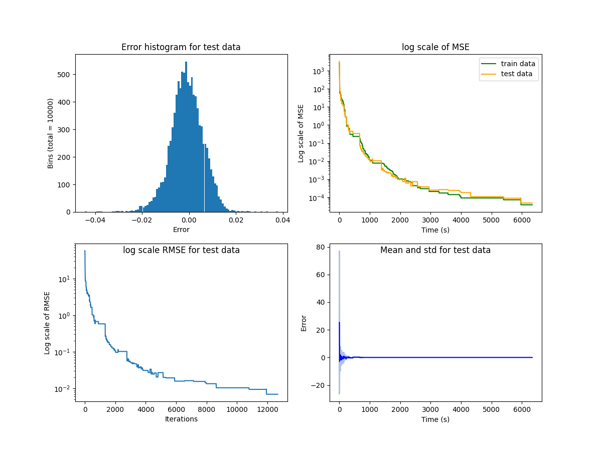

This is the official implementation of "Syrenets: Symbolic Residual Neural Networks".
To install requirements:
you need to first install Anaconda (instructions can be found: https://docs.anaconda.com/anaconda/install/)
in the project folder run:
conda env create -f environment.yml
then activate the environment:
conda activate neurips2021_syrenets
install pytorch using pip (it depends if you have a CPU or a GPU and which version of CUDA you have, follow the instructions in: https://pytorch.org/get-started/locally/)
To train the models in the paper, run this command for the first experiment (direct learning):
python train.py 'direct'
and this command for the second experiment (indirect learning):
python train.py 'indirect'
aditional hyperparamenter can be changed, the list of full paramenter that can be defined is given by:
python train.py -h
The default values are already the ones reported in the paper. If executed, each experiment will evaluate 10 seeds and output each one's best performance at every 1000 steps. The training of each seed automatically stops when 2000 seconds of training is reached. The next seed starts its training automatically.
At each 2000 steps the mean squared test error (mse), the root mean squared test error (rmse), the mean test error (mean), the standard deviation of the test error (std), the minimal test error (min) and the maximum test error (max) are printed in the screen. A visualization of this data is also shown on screen as exemplified here:

To evaluate my model on , run:
python eval.py <experiment> <model_name>
Where <experiment> is the string 'direct'(for evaluating the first experiment) or 'indirect' (for evaluating the second experiment) <model_name> is the string with the name of the .pt file that contains the trained model in one of the experiments.
Our naming convention denoted files ending with '_best_model.pt' as model files, provide the name of the file . You should only evaluate models that are trained in the same experiment as denoted in <experiment> since the trained models are not the same.
You can download pretrained models here: https://www.dropbox.com/s/rk5cpeho4twrpi1/trained_models.zip?dl=0
extract the zip files into the project folder
The files starting with 'syrenets_direct' are: the best model we obtained when training directly; and the training history of the model.
The files starting with 'syrenets_indirect' are: the best model we obtained when training indirectly; and the training history of the model.